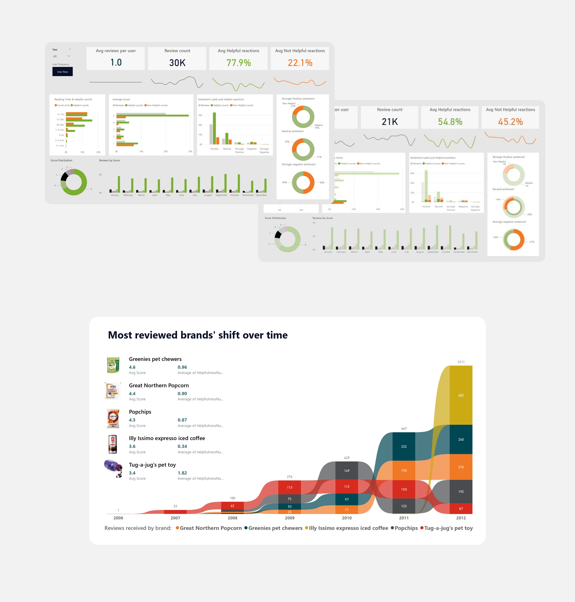
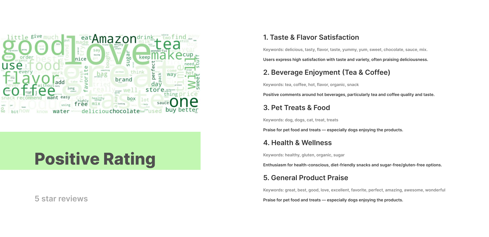
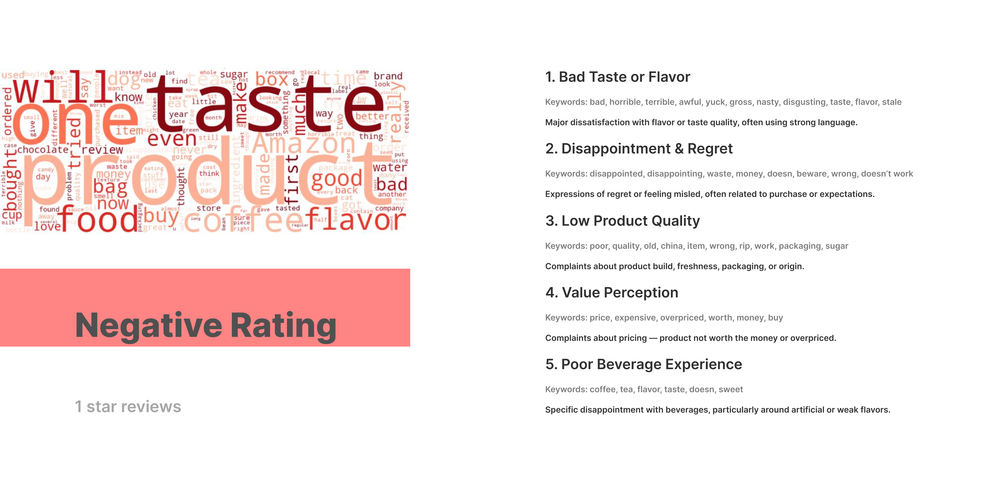
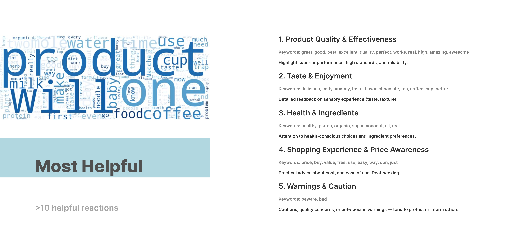

Amazon Fine Foods Reviews Analysis
Description
This is a personal project to explore natural language and user behaviour analysis. The Amazon Fine Foods Reviews dataset was used, sourced from Kaggle. The dataset includes 568K+ reviews across 74K products from 1999–2012. Data includes ratings, user / product ID, helpful reaction counts and review text.
Objectives
-Motivations to food review engagement.
-Negative and positive product review key themes.
-Drivers to helpful and non helpful reactions.
-Yearly and monthly patterns.
-Recurrent and one-time user behavioural trends.
Python Exploratory Analysis Insights
-Reviews increased exponentially up to 2012, peaking by 2021, which correlates to product variety increase (Unique Product IDs). October sees the highest average review count, while November sees the lowest.
-5 star reviews dominate the dataset consistently, followed by 1 start reviews.
-Helpful votes grew 5 times faster and reach 3 times more counts than Non Helpful votes.
-80% of users reviewed once while 0,05%% posted >50 reviews. Excessive reviewers gathered more positive scores; text samples revealed potential bots or spam users.
-Product reviews clusters focus on experience, emotion, health and practical value. Most helpful reviews further highlight warnings, ingredients and quality.
-Longer texts tend to have 5 starts, and the 500-1K character length range groups the most helpful reviews, suggesting 20–60 seconds reads are optimal for users and effective to capture consumers' feedback.
A Power BI dashboard was built to visualize relationships among score, text sentiment, reading time, user recurrence and reactions (helpful-non helpful), highlighting volume trends and correlations between review attributes and user feedback.
Most reviewed products revealed engagement shifts across time with the most reviewed in 2012 being the youngest product (Illy expresso coffee), while receiving the lowest average rating and helpful reaction percentage against total reactions.

Clustering themes in Python lacked useful insights, so instead I used keyword frequency sampling to identify prevailing themes aided by an LLM, and explore user motivations behind posting and reacting to reviews.


